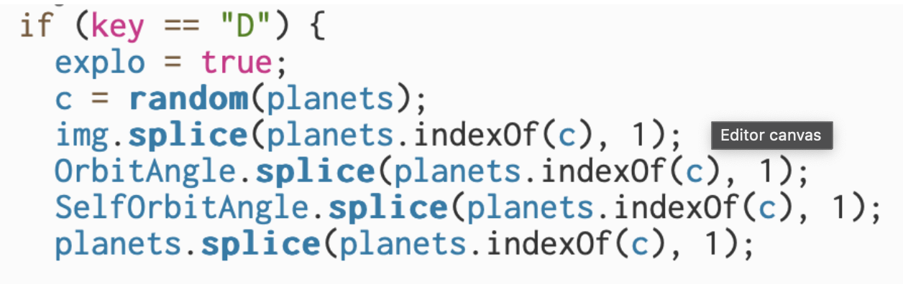
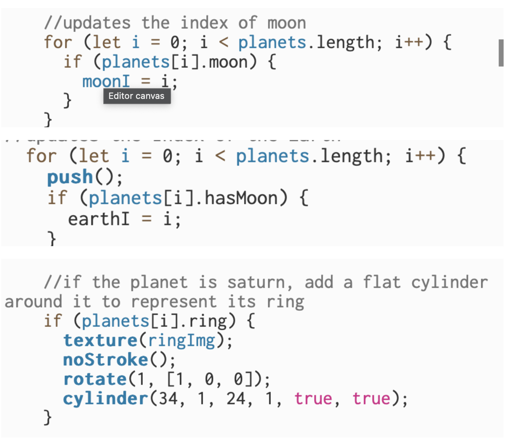
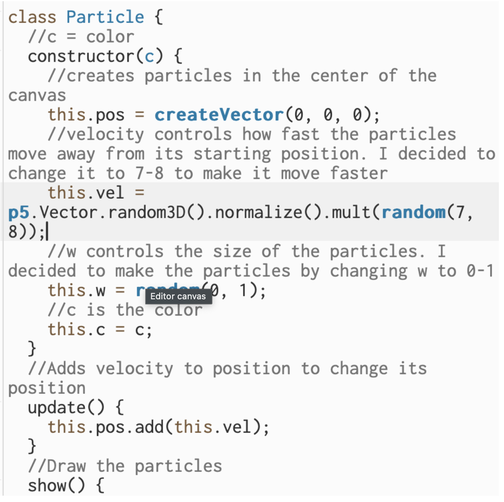
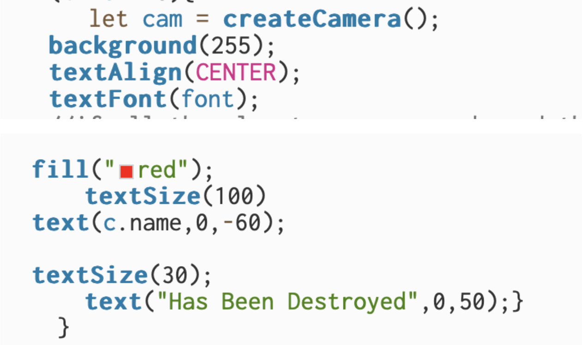

*Press 'd' to destroy a planet
Random Select & Remove Function
The logic behind removing a random element from an array is straight forward after I became familiar with the array.splice() function. What was problematic, however, was that some of the properties of the planets are stored elsewhere in multiple other arrays, including their texture, their orbit location, rotation location. What was difficult was, thus, to synchronize all the arrays so that they remove the same planet. Therefore, I had to remove non-planet elements from the texture array and make sure that the index of each planet is the same among different arrays.
In addition, since the index number of each planet is altered by the select&remove function, instead of identifying them based on their position in the array, I had to create a boolean variable within the object to constantly check their new position in the array. This was necessary for planets like the Earth, the Moon, and Saturn, whose codes are different from that of the rest of the planets.
Explosion Particle Effect
Next, I wanted to create an explosion effect each time a planet is removed. I borrowed the code from this link, as the project is mostly about the selection&remove function: https://editor.p5js.org/Bacarri_WB/sketches/oL3nA9JYd I changed some of the values to achieve the effect that I wanted to achieve such as, how fast the particles move away from the center of explosion, the sizes of the particles, their colors, etc. I also wanted to change the position of the center of explosion based on the planet selected to remove so each planet has their own explosion effect. This attempt was unsuccessful, however, since a lot of problems occured when I was trying to obtain the direct coordinates of each planet.
I also inserted a text indicating which planet was randomly selected to removed after they are removed. This was achieved in WEBGL by fixing the camera angle towards the center.
